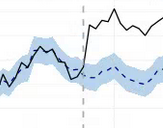
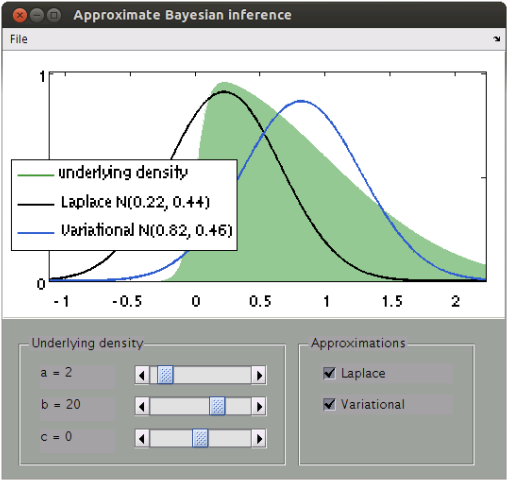
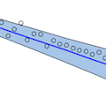
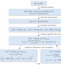
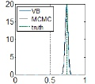
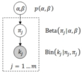
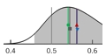
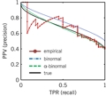
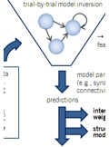
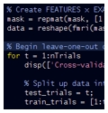

Code
View GitHub profileCausalImpact: A new R package for estimating causal effects in time series
09/2014 — The CausalImpact R package implements an approach to estimating the causal effect of a designed intervention on a time series. For example, how many additional daily clicks were generated by an advertising campaign? Answering a question like this can be difficult when a randomized experiment is not available. The package overcomes this difficulty using a structural Bayesian time-series model to estimate how the response metric would have evolved after the intervention if the intervention had not occurred.
 Google Open Source BlogProject siteGitHub repository
Google Open Source BlogProject siteGitHub repositoryDocumentation
An interactive comparison of the Laplace approximation and variational Bayes
03/2014 — In Bayesian inference, the Laplace approximation is a simple scheme for obtaining an approximate posterior. However, it is a local approximation that is often too strong a simplification. Variational Bayesian (VB) inference generalizes the idea behind the Laplace approximation: it finds an approximate posterior that maximizes the free energy and thus minimizes the KL-divergence between approximate and true posterior. This MATLAB demo illustrates the differences between the two approximations.
Download v1.01 (17 KB) Slides
Slides
Variational Bayesian linear regression: a MATLAB implementation
03/2013 — The conceptual and practical limitations of classical multiple linear regression models can be resolved naturally in a Bayesian framework. Unless based on an overly simplistic parameterization, however, exact inference in Bayesian regression models is analytically intractable. This problem can be overcome using methods for approximate inference. This MATLAB toolbox implements variational inference for a fully Bayesian multiple linear regression model, including Bayesian model selection and prediction of unseen data points on the basis of the posterior predictive density. See these slides for the derivation.
Download v1.02 (360 KB)DocumentationSlides
Variational Bayesian inference on classification performance: an R package
01/2013 — Mixed-effects inference is critical whenever one wishes to evaluate the performance of a classification algorithm that has been trained and tested on a hierarchically structured dataset. This setting is very common in domains as varied as spam detection, brain-machine interfaces, and neuroimaging. This R package provides an efficient variational Bayesian implementation of the normal-binomial model for mixed-effects inference. The package permits inference on accuracies as well as balanced accuracies. For details, see Brodersen et al. (2013) NeuroImage.
This code is hosted on GitHub.Mixed-effects inference on classification performance: a MATLAB toolbox
06/2012 — Classification algorithms are often used in a hierarchical setting, where a classifier is trained and tested on individual datasets which are themselves sampled from a group. Examples of this sort of analysis are ubiquitous and are common in domains as varied as spam detection, brain-machine interfaces, and neuroimaging. This toolbox provides answers to the questions of statistical inference that arise in all of these settings. It implements models that account for both within-subjects (fixed-effects) and between-subjects (random-effects) variance components and thus provide mixed-effects inference. The toolbox provides (i) asymptotically exact MCMC implementations as well as (ii) computationally efficient variational Bayes approximations. For details about the MCMC sampler, see Brodersen et al. (2012) JMLR. For details about the variational algorithms, see Brodersen et al. (2013) NeuroImage.
Download v1.05 (40 KB)Documentation for MATLABBayesian model inversion of the beta-binomial model in Java
11/2011 — The beta-binomial model enables the performance evaluation of a classification algorithm that is used in a hierarchical context. This archive contains a Java implementation of a Metropolis-Hastings/Gibbs sampling scheme. The algorithm is asymptotically exact and about 10 times faster than an equivalent MATLAB implementation. For details about the model, see Brodersen et al. (2010b) ICPR.
Download v1.0 (13 KB)Multivariate pattern analysis (MVPA) framework
04/2011 — The MVPA framework for MATLAB provides a generic environment for the application of statistical methods to high-dimensional datasets, such as those obtained by functional magnetic resonance imaging (fMRI). The framework is highly extensible and supports tight integration with LIBSVM, the Princeton MVPA toolbox, and Sun Grid Engine for use on high-performance compute clusters running Linux. It is published under the terms of the GNU General Public License.
Download v3.2 (r10406) (703 KB)Computing the posterior balanced accuracy
10/2010 — The average accuracy obtained on individual cross-validation folds is a problematic measure of generalization performance. First, it makes statistical inference difficult. Second, it leads to an optimistic estimate when a biased classifier is tested on an imbalanced dataset. Both problems can be overcome by replacing the conventional point estimate of accuracy by an estimate of the posterior distribution of the balanced accuracy. The archive below contains a set of MATLAB functions to estimate the posterior distribution of the balanced accuracy and compute its associated statistics. For details, see Brodersen et al. (2010b) ICPR.
This code is hosted on MATLAB Central.Estimating a smooth precision-recall curve
06/2010 — The precision-recall curve (PRC) has become a widespread conceptual tool for assessing classification performance. The curve relates the positive predictive value of a classifier to its true positive rate and provides a useful alternative to the well-known receiver operating characteristic (ROC). A smooth estimate of the PRC can be computed on the basis of a simple distributional assumption about the underlying decision values. The archive below contains a MATLAB implementation of this approach. For details, see Brodersen et al. (2010a) ICPR.
This code is hosted on MATLAB Central.Dataset for model-based feature construction
04/2010 — Model-based feature construction is a multivariate-decoding approach that addresses the twin challenges of feature selection and biological interpretability by (i) inverting a dynamic systems model of neurophysiological data in a trial-by-trial fashion; (ii) training and testing a discriminative classifier on a feature space derived from the trial-wise model parameter estimates; and (iii) reconstructing how informative each model parameter was in separating the cognitive states of interest. The archive below contains the somatosensory dataset used for illustrating this approach in Brodersen et al. (2011) NeuroImage.
Download (78 KB)Decoding cognitive states from fMRI: a simple example
02/2010 — Contemporary analysis pipelines for decoding brain states based on fMRI typically comprise thousands of lines of code. In contrast, this example illustrates the core principles behind fMRI classification in just about two screens full of MATLAB code. The example contains a fully preprocessed single-subject dataset. The first analysis performs a simple classification analysis, resulting in a classification accuracy. The second analysis creates a probabilistic map of feature importance. Updated on 12/02/2014.
Download v1.06 (57 MB)